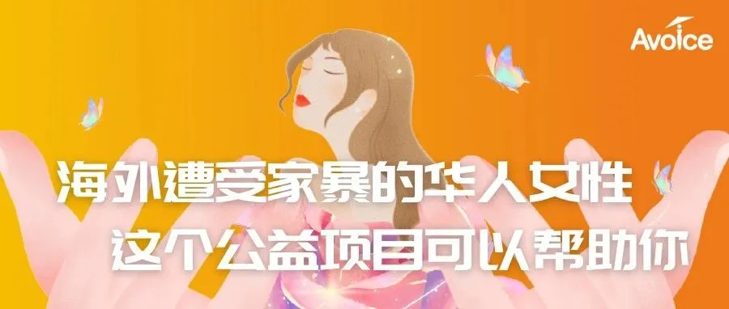


Avoice海外华人女性保护项目（Against Violence to Overseas Chinese Women Program）为遭受家庭暴力威胁的海外华侨华人女性提供充分、持续的保护和支持，包括语言支持、心理支持、法律支持、社群支持、海外救助网络支持、采写发声支持等。目前项目以欧洲和北美为核心，并面向东南亚、澳洲等区域发展，致力于搭建受助女性和各方资源的桥梁，成为她们坚实的后盾和温暖的避风港——Avoice项目已为近200名女性提供了救助服务，并形成了逾500名华人女性组成的互助社群。
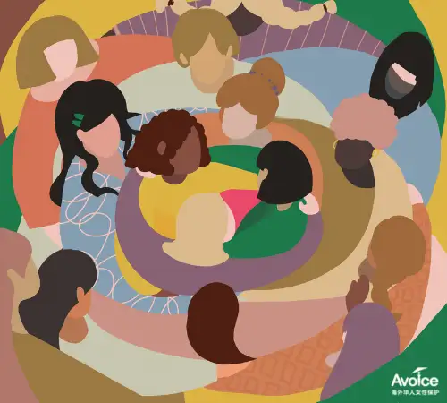
海外华侨华人女性在异国他乡遭受家庭暴力时，往往面临国籍身份限制、语言文化隔阂、对当地法律不了解、因外来身份遭受偏见、远离国内亲朋好友等重重压力，势单力薄之下使得摆脱家暴之路艰难而曲折。
Avoice项目愿向每一位遭受家暴伤害的海外华侨华人女性展开温暖坚定的怀抱，愿与她共同面对困境与阴霾。
如果你身在海外、正面临或遭受着家庭暴力伤害，请听我们说：遭受侵害不是你的错，请不要自责；家暴不是家务事，请勇敢寻求公益机构的帮助！
Avoice渴望遇见你，拥抱你，理解你，倾听你的故事。无论你身份如何，处境如何，我们都会尽力为你提供各方面的解决方案，愿陪伴你走出阴霾面向光明。请相信我们一直都在！
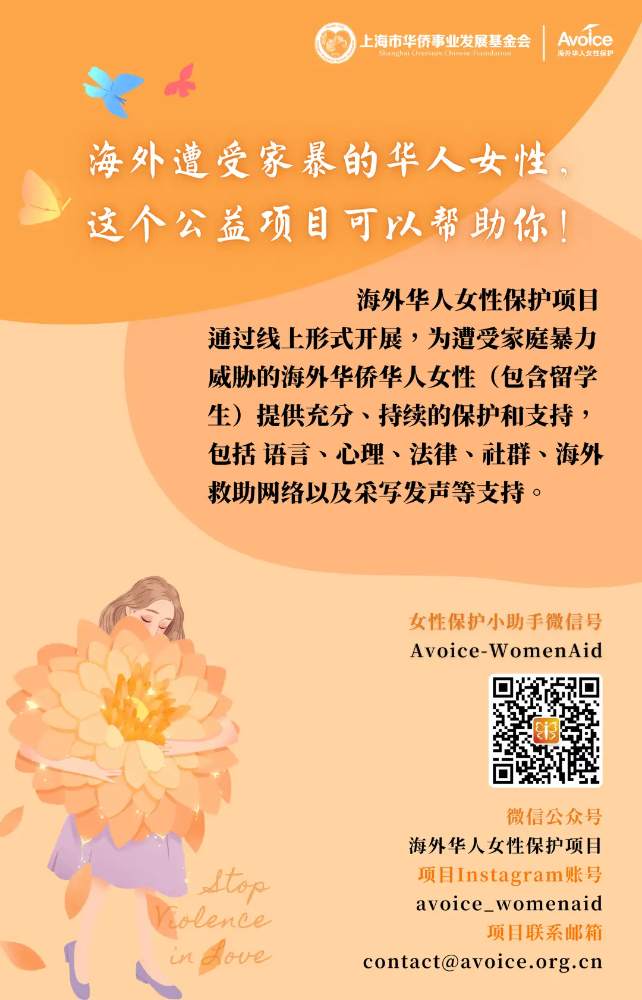

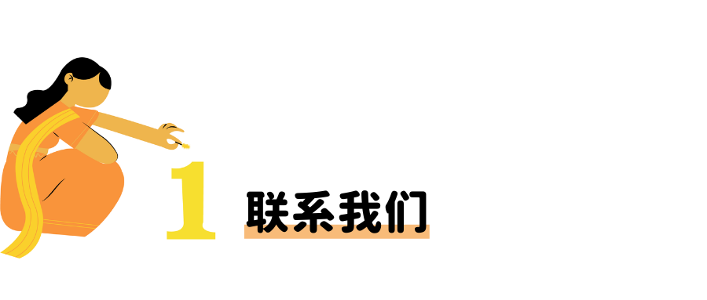
需要帮助，或申请加入海外华人女性互助社群请联系：
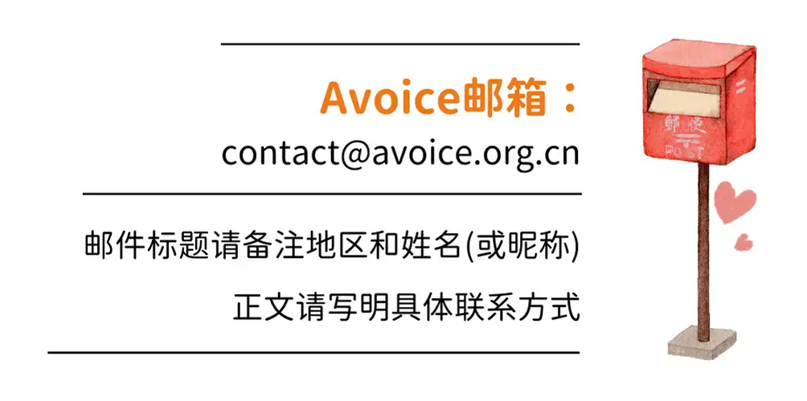
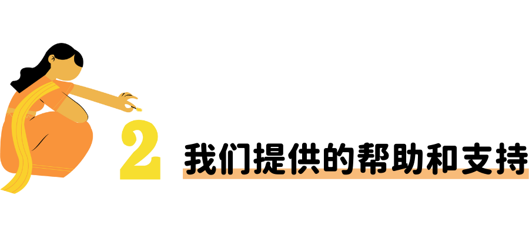
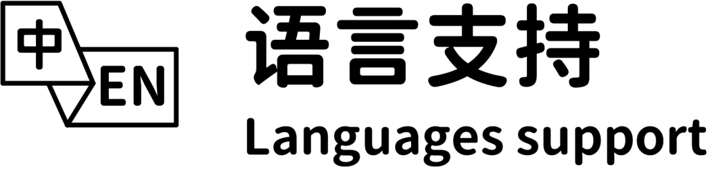
多语种覆盖：
英语、法语、德语、俄语、荷兰语、捷克语、葡萄牙语、意大利语等
翻译与沟通：提供口译、笔译服务，协助收集和递交求助材料
手语服务：为听障人士提供线上手语服务，协助沟通交流、收集信息，递交材料等
心理咨询：提供定制化的心理疏导与咨询，其中包括对施暴者的心理辅导
心理课程： 研发心理课程及其他形式的心理学习资料
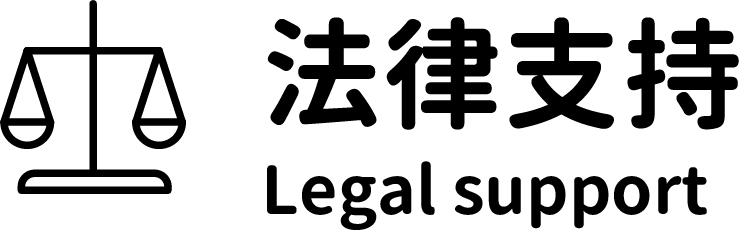
法律信息：
整理和翻译各国反家暴法律条文，搭建各国法律中文数据库，制作中文普法手册
法律建议：为受助者进行个案分析，提供法律建议
法律外联：提供当地法律网络信息，可协助联系法律机构、援助律师，并递交材料和帮助后续沟通
女性互助社群：建立华人女性互助社群，扩大社会关系，促进同伴互助
线上交流学习： 开展线上交流学习活动，包括家暴预防、自我保护、法律知识普及、团体心理辅导、性别意识提升等
各国救助信息库：
搭建各国中文救助信息库，包括庇护所、医疗、法律、心理、经济援助等救助机构和专家的详细信息
信息与转介：提供合适的机构信息，可协助联系相关机构并递交材料和帮助后续沟通。与救助信息库中的部分机构和专家建立合作关系，为受助者提供快速、有效的资源对接
家暴受害者：倾听家暴受害者的遭遇，记录她们的真实感受，分享她们摆脱家暴的方法和经验
反家暴从业者：了解家暴救助模式与相关制度，共享救助平台与信息
其他相关群体：采访与家暴受害者相关的其他群体（子女、亲友、同事等），从多维视角呈现家暴事件及其影响的全貌
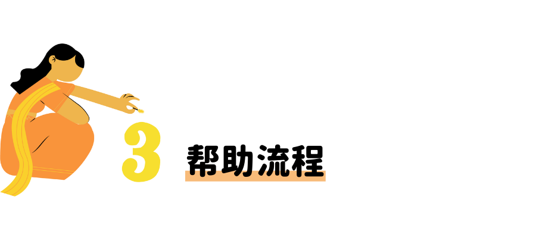
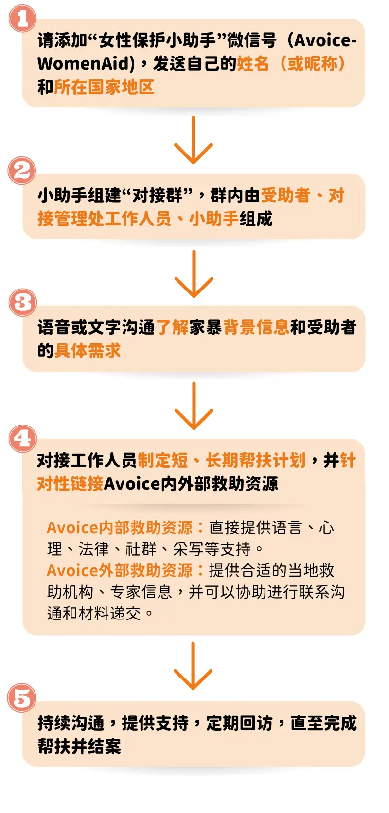
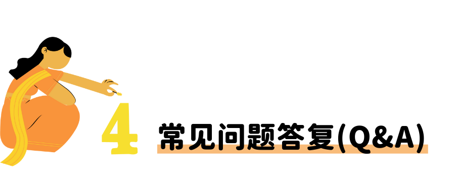
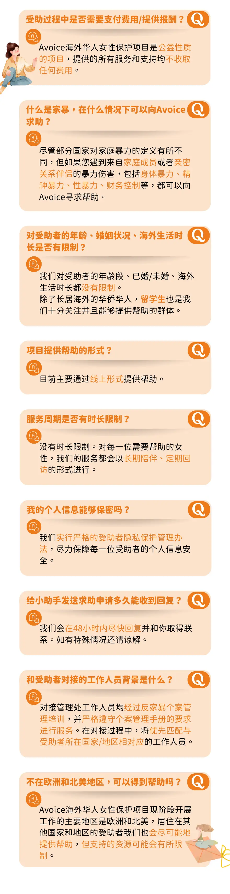
项目介绍链接 | 海外华人女性保护项目：


Avoice期待并感谢您将此文章转发至海外华人社群、微信朋友圈等平台，让更多身处家暴困境的女性知晓这一公益援助渠道。
您的每一次传播和发声都是“家暴中的她们”获得长期支持与赋能的起点。
请点击在看并关注我们，携手消除家庭暴力，共建爱与平等的华人女性家园！
感恩相遇 感谢关注 欢迎转载
微信公众号：海外华人女性保护项目
微博：海外华人女性保护项目
抖音：海外华人女性保护项目
快手：Avoice华人女性保护
B站：Avoice华人女性保护
知乎：Avoice华人女性保护
Instagram：avoice_womenaid
Facebook: Womenaid Avoice
领英：Avoice海外华人女性保护